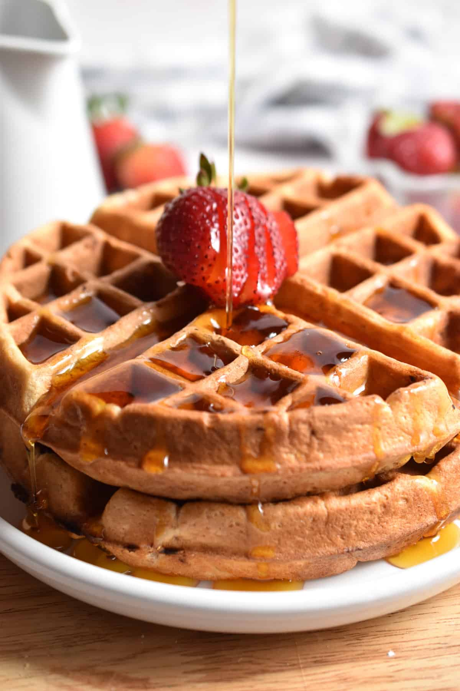

Strawberry Buttermilk Waffles

Description
Wake up to these delicious, fluffy, strawberry buttermilk waffles. These are easy to make and pair great with a side of bacon or sausage.
Ingredients
- 2 1/2 cups of all-purpose flour
- 4 tsp of baking powder
- 3/4 tsp salt
- 2 cups of buttermilk
- 1/2 cup vanilla Greek-style yogurt
- 1/2 cup butter, melted
- 2 eggs, beaten
- 1 1/2 tbsp white sugar
- 3/4 cup chopped strawberries, or more to taste